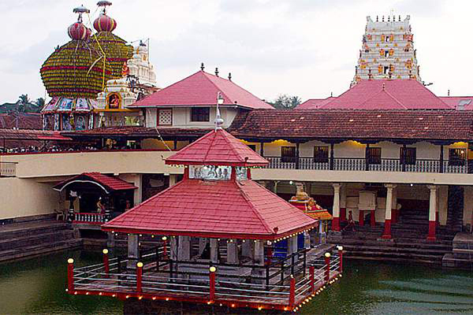
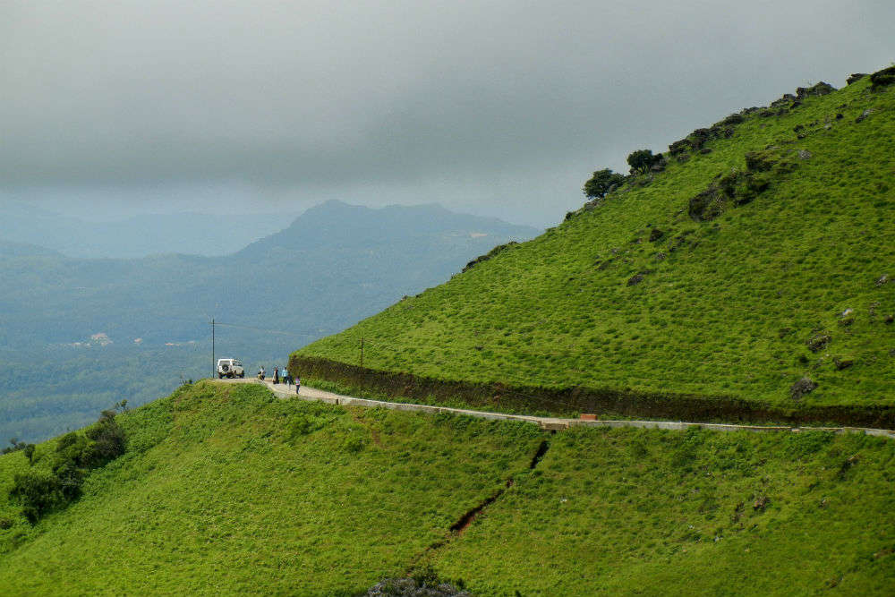
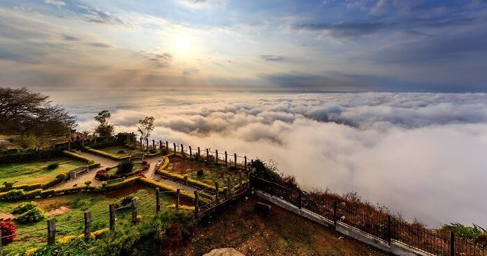
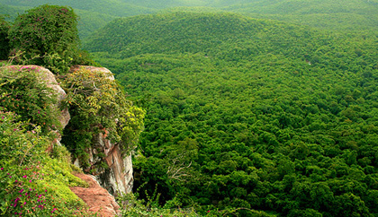
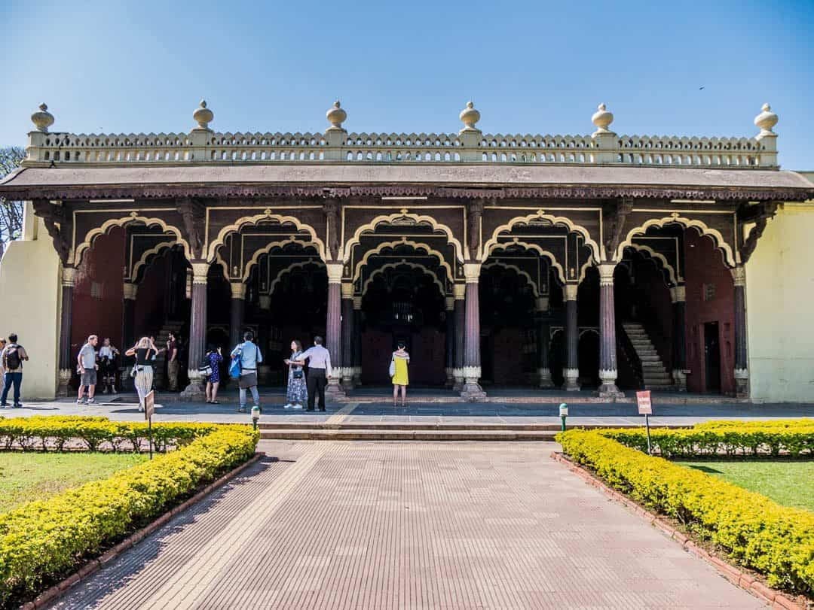
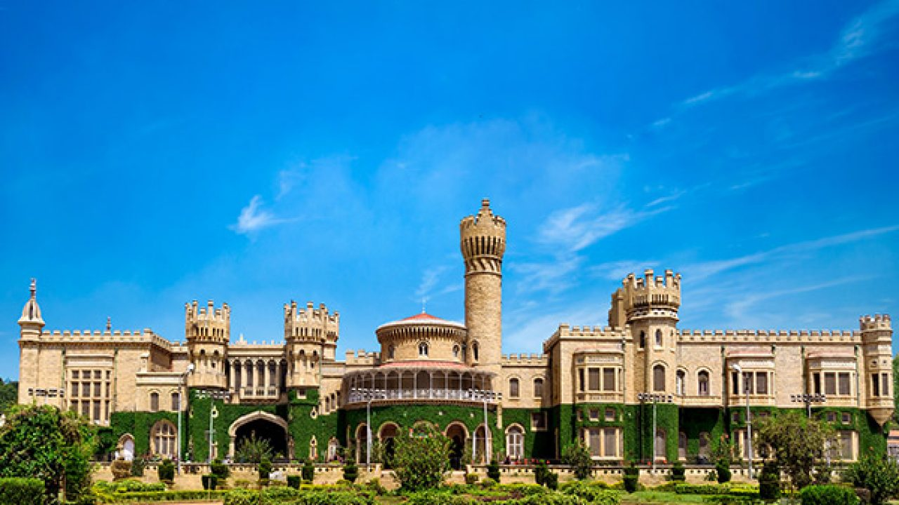

MURUDESHWAR SHIVA TEMPLE
Built on the Kanduka hill in the town of Murudeshwar, this Temple is indeed one of the most popular Temples in the state. The 123 feet tall idol is the world’s second-largest statue of Lord Shiva. The Temple is also surrounded by the Arabian Sea on three sides, thus offering breathtaking views. The Temple’s Gopuram (237 ft) is also one of the tallest in India.
VITTHALA TEMPLE
Known for its exceptional architecture and unmatched craftsmanship, Vitthala Temple is one of the most significant structures in Hampi, a UNESCO World Heritage Site. Dedicated to Lord Vishnu, it is one of the most popular attractions of this ruined town. This spectacular Temple is renowned for its striking structures, including the stone chariot and monolithic musical pillars.
HILL STATIONS
COORG
Located amidst imposing mountains in Karnataka with a perpetually misty landscape, Coorg is a popular coffee producing hill station. It is popular for its beautiful green hills and the streams cutting right through them. It also stands as a popular destination because of its culture and people. The Kodavas, a local clan specializing in martial arts, are especially notable for their keen hospitality.
CHIKMANGALUR
Chikmagalur, known officially as Chikkamagaluru, is a city and the headquarters of Chikmagalur district in the Indian state of Karnataka. Located on the foothills of the Mullayanagiri peak of the Western Ghats, the city attracts tourists from around the state for its pleasant and favourable hill station climate, tropical rainforest and coffee estates.Chikmagalur is connected to other parts of the state through roads. National Highway 173 (India) passes through the town connecting with port city Mangalore, located 150 kilometres (93 mi) away. State Highway 57 (Karnataka) connects Mysuru via Hassan connects Shivamogga via Tarikere. A railway line connects Chikmagalur to Kadur Junction. The nearest international airport is Mangalore International airport
NANDI HILLS
Nandi Hills (Anglicised forms include Nandidurg and Nandydoorg) is an ancient hill fortress built by Ganga Dynasty and later enlarged and strengthened by Tipu Sultan in southern India, in the Chikkaballapur district of Karnataka state. It is 10 km from Chickballapur town and approximately 60 km from Bengaluru. The hills are near the town Nandi. In traditional belief, the hills are the origin of the Arkavathy river, Ponnaiyar River, Palar River, Papagni River and Penna River. Watching the sunrise at Nandi Hills is popular with tourists. The first ever SAARC summit hosted by India was held at Nandi Hills in 1986
BILIGIRIRANGANA HILLS
The Biligirirangana Hills or Biligirirangan Hills (as referred to in biology and geology) is a hill range situated in south-western Karnataka, at its border with Tamil Nadu (Erode District) in South India. The area is called Biligiri Ranganatha Swamy Temple Wildlife Sanctuary or simply BRT Wildlife Sanctuary. It is a protected reserve under the Wildlife Protection Act of 1972. Being close to the Eastern Ghats as well as the Western Ghats, the sanctuary has floral and faunal associations with both regions. The site was declared a tiger reserve in January 2011 by the Karnataka government, a few months after approval from India's National Tiger Conservation Authority
PALACES
TIPU SULTAN PALACE
Tipu Sultan's Summer Palace, in Bangalore, India, is an example of Indo-Islamic architecture and was the summer residence of the Mysorean ruler Tipu Sultan. Hyder Ali commenced its construction within the walls of the Bangalore Fort, and it was completed during the reign of Tipu Sultan in 1791. After Tipu Sultan's death in the Fourth Anglo-Mysore War, the British Administration used the palace for its secretariat before moving to Attara Kacheri in 1868. Today the Archaeological Survey of India maintains the palace, which is located at the center of Old Bangalore near the Kalasipalyam bus stand, as a tourist spot.
MYSORE PALACE
The Mysore Palace, also known as Amba Vilas Palace, is a historical palace and the royal residence (house) at Mysore in the Indian state of Karnataka. It is the official residence of the Wadiyar dynasty and the seat of the Kingdom of Mysore. The palace is in the centre of Mysore, and faces the Chamundi Hills eastward. Mysore is commonly described as the 'City of Palaces', and there are seven palaces including this one; however, 'Mysore Palace' or 'Amba Vilas Palace' refers specifically to this one within the Old fort.
BANGALORE PALACE
Bangalore Palace is a royal palace located in Bangalore, Karnataka, India, in an area that was owned by Rev. J. Garrett, the first principal of the Central High School in Bangalore, now famous as Central College. The commencement of the construction of the palace is attributed to him.The property was purchased from Rev. Garrett in 1873 at a cost of Rs. 40,000 by the British Guardians of the minor Maharaja Chamarajendra Wadiyar 10 using his personal funds. They were in charge of his education and administrative training to ready him to take over his reign in 1881 AD. As the young Maharaja did not have a suitable place to stay during his training in Bengaluru, this property was purchased and transformed.
FOOD
KORI GASSI
Kori gassi or Mangalorean chicken curry is a delectable dish from the coastal area of Mangalore in southern Karnataka. The traditional chicken gassi recipe combines succulent pieces of chicken in a delicious thick spicy curry with the flavours of creamy coconut milk, golden brown onions, a kori gassi masala paste made of roasted spices, and tangy tamarind.
In Kannada or in the Tulu language, kori means chicken and gassi is curry.
NEER DOSA
Neer dosa, literally meaning water dosa in Tulu is a crêpe prepared from rice batter. Neer dosa is a delicacy from Tulu Nadu , and part of Udupi - Mangalorean.Unlike other dosas neer dosa is known for its simple preparation method and lack of fermentation. Usually neer dosa is served with coconut chutney, sambar, saagu and non vegetarian curries like chicken, mutton, fish and egg curry.Even though many variations exist for Neer Dosa batter, the two basic ingredients common to all of them are just soaked rice (or rice flour) and salt.There is no requirement for fermentation of the rice in order to prepare Neer dosa. The rice needs to be soaked for at least 2 hours. After a quick wash and a drain the rice needs to be ground by adding water in order to get very fine batter. Additional amount of water can be added based on the thickness of the batter and then salt is added for taste. Finally the batter is used to prepare the dosa.
LANGUAGE
KANNADA
Kannada (/ˈkɑːnədə, ˈkæn-/;[6][7] ಕನ್ನಡ, [ˈkɐnːɐɖa]; less commonly known as Kanarese)[8][9] is a Dravidian language spoken predominantly by the people of Karnataka in the southwestern region of India. The language is also spoken by linguistic minorities in the states of Maharashtra, Andhra Pradesh, Tamil Nadu, Telangana, Kerala and Goa; and also by Kannadigas abroad. The language had roughly 43 million native speakers by 2011.[10] Kannada is also spoken as a second and third language by over 12.9 million non-native speakers in Karnataka, which adds up to 56.9 million speakers.[11] Kannada was the court language of some of the most powerful dynasties of south and central India, namely the Kadambas, Chalukyas, Rashtrakutas, Hoysalas and the Vijayanagara empire. It is one of the scheduled languages of India and the official and administrative language of the state of Karnataka.
LIFESTYLE AND CULTURE OF KARNATAKA
Karnataka is very famous for its historical monuments and cultures. The tourism sector of Karnataka is increasing day by day, as most of the tourists attracted to the heritage of the state. Most of the monuments in Karnataka have great historic relations. Tipu Sultan Palace, Mysore Palace depicts a great history about the King of Mysore, who once defeated Britishers from acquiring the region. Hampi is one of the UNESCO’S World Heritage Site here. Many old temples, old monuments have a great contribution towards the state integrity. Chamundeshwari Temple, ISKCON Temple, plays a great role in profiting the tourism sector of Karnataka. Bangalore is the capital of Karnataka, also known as Silicon city which settles many of the World’s top-Class Companies. People in Karnataka usually like trekking, many of the tourists visit Nandi hill, Shivaganga hill, Savan Durga hill to feel the beauty of nature. There is no seasonal tourism, people from all over the world visit Karnataka to enjoy the culture, tradition, food, and mostly to discover the Heritage, which the state had occupied from dynasties.
BEST TIME TO VISIT KARNATAKA
October to April is the best time to visit Karnataka. Winters are the best time to go on a wildlife safari or attend the grand Mysore Dussera. Owing to its proximity to the western coast, Karnataka is quite humid during Summers from April to June. While coastal regions are hotter, hill stations are mild and colder.
BUDGET REQUIRED
Approx~ 15,310 INR(per person, 1 week)